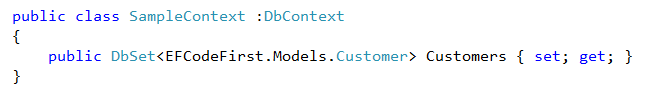

{kind=link}
{kind=link}

Here is a small -quick-step -by-step tutorial to get started with Entity Framework Codefirst approach. I have included the sample project at the end of this post for reference.
I created a new ASP.NET MVC3 Project using the New->Project Dialog.
In Code First Approach, We create our Entities first by writing classes. Then Entity framework will create the database for us based on our classes. So Let us create some classes.
Right click on the Models Folder and Select Add->New Item and Select Class. Give the class name as Customer.cs
Open the Customer.cs file and Add some properties for our Customer Entity.
OK. Now Let us create a controller and View
Right click on the Controllers folder in the Solution explorer and select Add->Controller. Give the Controller name as CustomerController. Keep the Scaffolding Template as Empty controller.
and we will add 3 action methods to this controller, The Index for Listing all customers and Create (both HTTPGET and HTTPPOST) for Creating new Entry.

Now Let us write some Data Acces code. right click on the project and Create a folder called "DAL" to store our data access code. Create a new class called "SampleContext" .
To make use of Entity framework, We need to have the entity framework dlls in our project. For adding that to our project, we can make use of Nuget package manager.
Right Click on the References and select "Manage Nuget Packages". Select Entity Framework and click install. You may search in the search bar, if you don't find Entity framework by default.
After the successful installation, you would see a green tick mark near to Entity framework.

Now if you expand the "References" section under your project, you can see EnrityFramework is added.
Lets go back to our SampleContext.cs file and make it inherit from DbContext. DbContext resides in System.Data.Entity namespace. So you need to add a using statement to refer that in your class.
Add a Property called "Customer" of type DbSet of our customer class

Now Go back to our Customer Controller and Replace the code like this
You can see that we are creating an object of SampleContext class and calling the Customers Property and applying the ToList() functions to convert the result as a List. When calling the Customers Property, Entity framework will return all customers stored in the table (which will be created).
I added some code in the Index view to iterate thru the Items and show it as an HTML table. You can find that in the sample project.
Now Let us run the Application by pressing F5 key. Browse to the Customer Index action. You may see a blank page because we don't have any customer records present now.
Go to SQLExpress instance and there you can see a new Database called EFCodeFirst.DAL.SampleContext.
If you expand the tables you will see we have a table called Customers with all the columns same as our Customer classes properties.
By Default, Entity framework will create a databse in the local SQL Express instance. But you can override this in different ways. You can see taht the database name is the full name of our DbContext class with the Namespaces.. If you want to create a database with a different name, you can override it by calling the DBContext base class constructor like this
To Add a new customer record, We can update our Create Action methods code like this
You can see that we are creating an object of our DbContext and adding a new Customer object to the Customers Property and Calling the SaveChanges method. I am redirecting then back to the Index action to stick with the PRG (Post-Redirect-Get) pattern.
Since this is a small tutorial, I have everything in one project . When you start developing applications, you may split it into different projects for your entities and Data access layer. I will be writing more posts following this for making the code better and handling complex scenarios like Joins and datatype length etc..
You can download the source code of this example here for references. Leave a comment if you download the source code from this page.
{kind=link}
{kind=link}
{kind=link}
{kind=link}
{kind=link}
{kind=link}